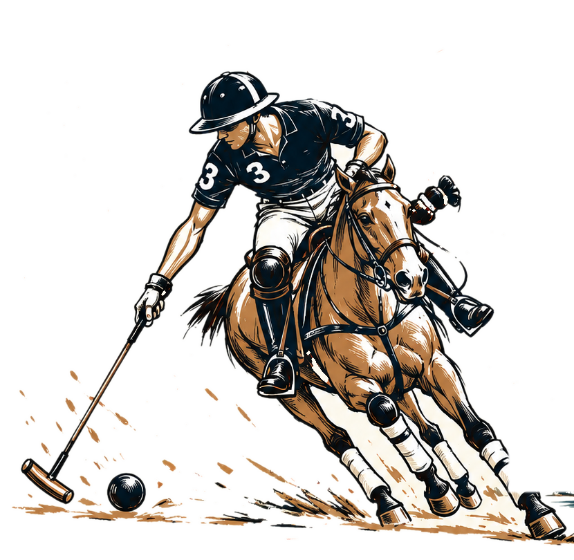
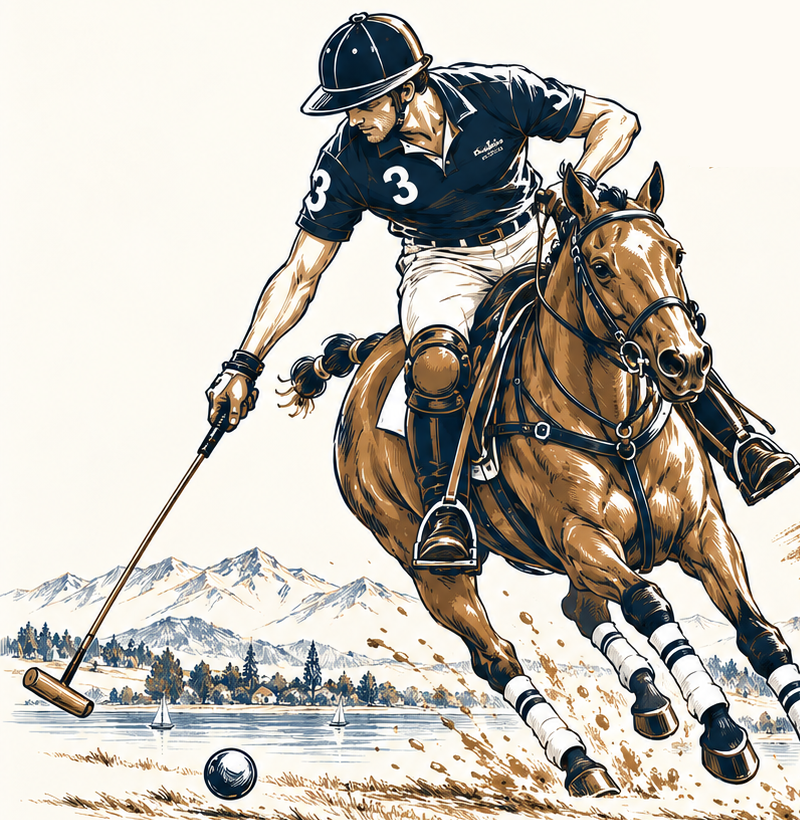
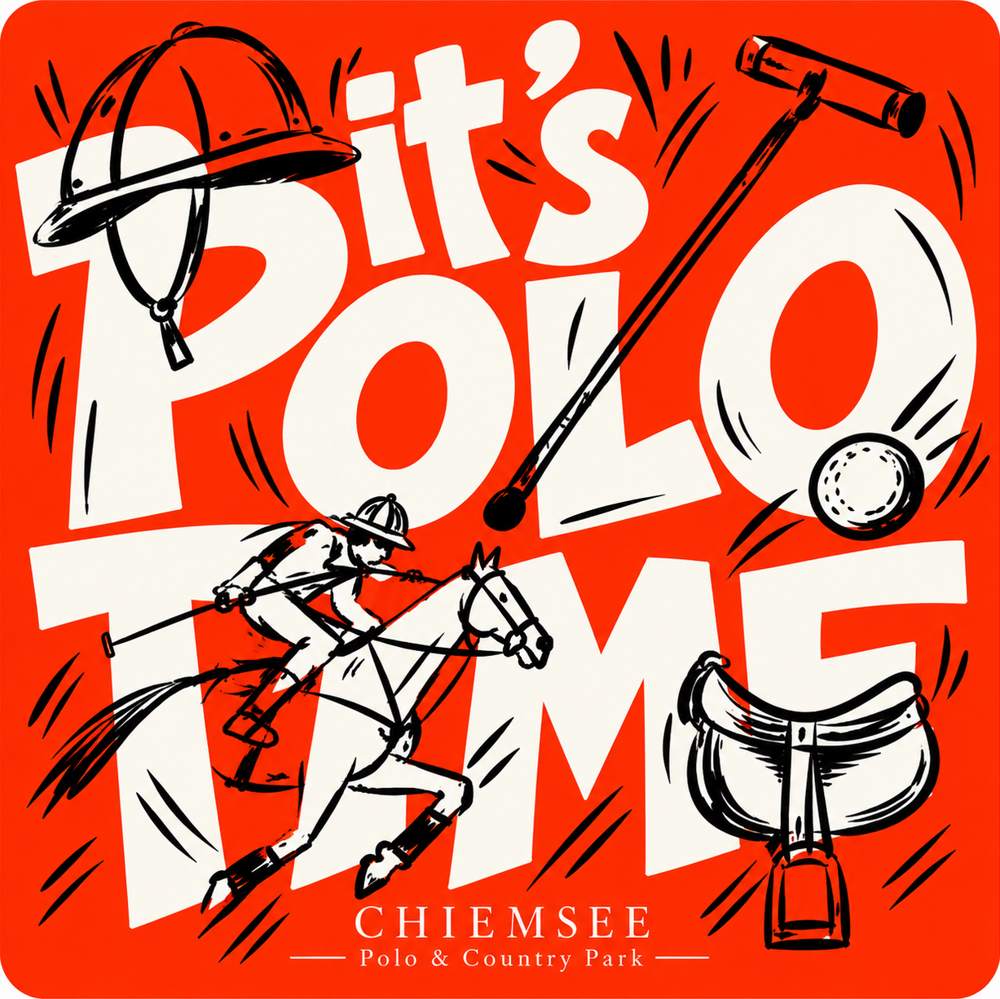

It's
Polo
Time
CHIEMSEE
— Polo & Country Park —
Was Polo in dir weckt:
Tempo
Teamgeist
Adrenalin


Wir suchen neue
Polo-Spieler!
Einsteiger
Willkommen
– auch ohne Reiterfahrung –
Achtung,
es besteht Suchtgefahr!
ATEMBERAUBENDER SPORT.

Werde Teil des Teams!
CHIEMSEE · POLO & COUNTRY PARK